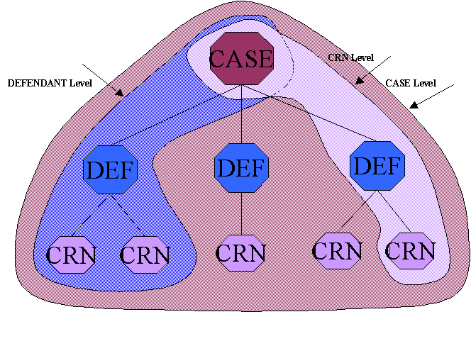

EventParameters object for different level CJSE Events.
Each event which is sent to the CJSE has an event level which determines the amount of information which must be sent to the CJSE. The three main levels are CASE, DEFENDANT and CRN (which corresponds to defendant on offence).
CASE level events will contain:
DEFENDANT level events will contain:
CRN level events will contain:
See below for a diagramatic representation.

An xxxCjseEventLevelPopulator is defined for each level, the populator makes use of a combination of helper classes to
populate the information required in the EventParameters object.
CasePopulatorHelper will populate case information for a given array of case ids or an XhbCaseDefendantPopulatorHelper will populate defendant information for a given XhbDefendantOnCase or a Collection of XhbDefendantOnCases.CrnPopulatorHelper will populate case information for a given XhbDefendantOnCase or a Collection of XhbDefendantOnCases.There are a number of special case populators where the event level may not be known at configuration time or a slight variation is required from the defined levels.
JoinderCjseEventLevelPopulator considered case level, however contains case information for more than one caseAppealWitnessSwornCjseEventLevelPopulator CASE or DEFENDANT levelLongAdjournCjseEventLevelPopulator CASE or DEFENDANT levelPleaCjseEventLevelPopulator DEFENDANT or CRN levelTrialWitnessSwornCjseEventLevelPopulator CASE or DEFENDANT levelUnrelatedDisposalCjseEventLevelPopulator DEFENDANT or CRN level
All the special case populators, excepting the JoinderCjseEventLevelPopulator, simply determine which
level this event should be, then delegate to the relevant populator described above.
See individual class documentation for further details.
The event level populators are configured in CjseEventLevelPopulatorFactory
@see uk.gov.courtservice.xhibit.courtlog.cjse.eventlevel.CjseEventLevelPopulatorFactory